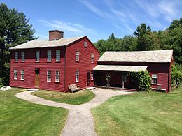

Fruitlands, a short-lived vegan community established in 1844 by Amos Bronson Alcott in Harvard, Massachusetts.
Origins
The origin of the English term vegetarian is unknown. The earliest known use is attributed to the actress Fanny Kemble, writing around 1839 in Georgia in the United States. The practice can be traced to Indus valley civilization in 3300 - 1300 BCE Ancient India. Early vegetarians included Indian philosophers such as Mahavira 6th-century-BCE and Acharya Kundakunda, the Indian poet Thiruvalluvar, the Indian emperors Chandragupta Maurya and Ashoka, Greek philosophers such as Pythagoras 6th-century-BCE, Empedocles and Theophrastus, the Roman poets Ovid, Seneca the Younger, Plutarch, Plotinus and Porphyry.
The earliest known vegan was the Arab poet Al-Maʿarri Their arguments were based on health, the transmigration of souls, animal welfare, and the view, espoused by Porphyry in De Abstinentia ab Esu Animalium, that if humans deserve justice, so do animals.
Animal Products
The origin of the English term vegetarian is unknown. The earliest known use is attributed to the actress Fanny Kemble, writing around 1839 in Georgia in the United States. The practice can be traced to Indus valley civilization in 3300 - 1300 BCE Ancient India. Early vegetarians included Indian philosophers such as Mahavira 6th-century-BCE and Acharya Kundakunda, the Indian poet Thiruvalluvar, the Indian emperors Chandragupta Maurya and Ashoka, Greek philosophers such as Pythagoras 6th-century-BCE, Empedocles and Theophrastus, the Roman poets Ovid, Seneca the Younger, Plutarch, Plotinus and Porphyry.
The earliest known vegan was the Arab poet Al-Maʿarri Their arguments were based on health, the transmigration of souls, animal welfare, and the view, espoused by Porphyry in De Abstinentia ab Esu Animalium, that if humans deserve justice, so do animals.
More..Mock meats in Veganz, a vegan supermarket in Berlin